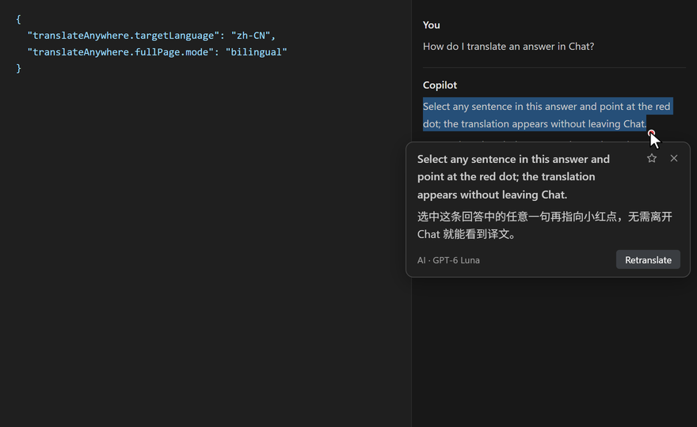

Select and hover
Look up a word or translate a longer selection in Chat, Markdown previews, and other built-in pages.
An open-source VS Code extension
Select and hover to translate Chat, the Agents window and Markdown previews. Read a paragraph or a full page in your language, with bilingual display when you want it.
VS Code 划词翻译插件：支持 Chat、Agents 与 Markdown 预览中的段落翻译、全文翻译和双语对照。

A little help while you read
Look up a word or translate a longer selection in Chat, Markdown previews, and other built-in pages.
Use Alt+Z for a paragraph or Alt+W for a full page. Press again to restore the original.
Choose a VS Code language model, your AI provider or a local endpoint. No API key? Use online translation or the offline English-to-Chinese dictionary.
AI translation sends text to the model provider or local endpoint used for that request. Online translation requires permission for the chosen service. Offline dictionary hits stay local; offline-only mode never sends misses to a translation service.
Enabling the integration changes VS Code installation files. Review the disclosure before enabling it; you can disable the integration and restore the files. Read the documentation.
Yes. Select text in Chat, the Agents window or a Markdown preview, then hover the red dot. Use Alt+Z for the paragraph under your mouse or Alt+W for full-page translation. Links and controls stay usable.
No. Translation runs in built-in reading pages, not text editors. Your source files are never changed by translation.
No. You can choose online translation without an API key, or use the offline dictionary. AI translation can use VS Code language models, your own provider key or a compatible local endpoint. Provider access, quotas and charges depend on the service you choose.